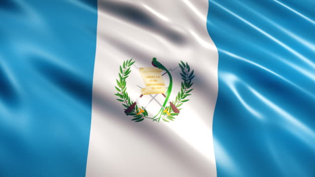

Historia de Guatemala:Guatemala fue poblada por los espanoles in el ano 1524. La capital fue trasladada varias veces. Primeramente de Santiago de Tecpan a Ciudad Vieja, en el ano 1527; mas tarde, en 1543 a Antigua y finalmente a la Cuidad de Guatemala en 1773. En 1821, Guatemala logro su independencia del dominio espanol. Sin embargo a raiz de inestabilidades de caracter interno, tanto en este país, como en todos los demas países de Centroamerica, excepto El Salvador, el mismo fue anexado a México en 1822, se logro dar formacion a lo que de dio en llamar las Provincias Unidas de Centroamerica.En 1847, logro Guatemala, finalmente afirmar su independencia nacional, razon por la cual a partir de ese entonces, ha sido conocida como una republica separada del resto de las naciones centroamericanas.
Bandera Actual (1871): Bandera de Guatemala. Es uno de los cinco Símbolos Patrios de Guatemala y también es la insignia suprema de la Patria, establecida oficialmente como tal el 21 de agosto de 1823 y modificada a como es actualmente el 17 de agosto y 18 de noviembre de 1871. Sus colores son el azul y blanco y en el centro lleva el Escudo de Armas (“Ministerio de la Defensa Nacional”, 2009). Cuando la bandera lleva el Escudo de Armas en medio toma el nombre de Pabellón Nacional (“Ministerio de la Defensa Nacional”, 2009).

Escudo nacional de Guatemala: Escudo de Guatemala. Es uno de los cinco Símbolos Patrios de Guatemala, establecido oficialmente como tal en el gobierno del Presidente de Guatemala, Miguel García Granados, el 18 de noviembre de 1871. Su creación original fue obra del artista de origen suizo Juan Bautista Frener. El mismo va en el centro de la Bandera Nacional aunque también puede estar representado individualmente.
Ave Nacional:El Quetzal fue declarado Ave Nacional de Guatemala, según el Decreto No.33 del 18 de noviembre de 1871 y cada 5 de septiembre se conmemora su día nacional. Este era considerado por las civilizaciones precolombinas de Mesoamérica como un ave divina asociada a Quetzalcóatl, la “serpiente emplumada”. Los antiguos mexicas y mayas vieron al quetzal como el “dios del aire” y como un símbolo de la bondad y la luz, sus plumas de cola verde fueron veneradas como símbolos para el crecimiento de las plantas en la primavera.
Flor Nacional: La Monja Blanca es una orquídea, establecida como Flor Nacional de Guatemala oficialmente el 21 de febrero de 1934 durante el gobierno de Jorge Ubico Castañeda. Su nombre científico es Lycaste virginalis forma alba. Actualmente está extinguida en su hábitat natural, pero se sigue cultivando en viveros y por coleccionistas.Según la Asociación Altaverapacense de Orquideología, la Monja Blanca ya está extinguida en la naturaleza
Árbol Nacional:La Ceiba desde 1955 fue declarada Árbol Nacional de Guatemala, cada 8 de marzo se conmemora su día.Es conocida por su nombre científico Ceiba Pentandra, fue establecida como Árbol Nacional el 8 de marzo de 1955 durante el gobierno del presidente de Guatemala Carlos Castillo Armas. La solicitud de la iniciativa fue hecha por el botánico Ulises Rojas. La fronda de la Ceiba puede tener hasta 1600 metros cuadrados, además es reconocida por su hermoso follaje y excelentes propiedades medicinales.

Extensión territorial:
Guatemala se sitúa en el istmo centroamericano con una extensión territorial de 108, 889 km2 y está limitada al oeste y norte por México, al este con Belice y el golfo de Honduras, al sureste con Honduras y El Salvador, y al sur con Océano Pacífico. El territorio se encuentra integrado por 22 departamentos, los cuales se dividen en 340 municipios. Su capital es la Ciudad de Guatemala.
Departamentos:
- Alta Verapaz
- Baja Verapaz
- Chimaltenango
- Chiquimula
- El Progreso
- Cuscatlán
- Escuintla
- Guatemala
- Huehuetenango
- Izabal
- Jalapa
- Jutiapa
- Petén
- Quetzaltenango
- Quiché
- Retalhuleu
- Sacatepéquez
- San Marcos
- Santa Rosa
- Sololá
- Suchitepéquez
- Totonicapán
- Zacapa
Lugares Turusticos más importantes:
Antigua, departamento de Sacatepéquez:
Fundada en 1543, fue distinguida durante la época colonial como la ciudad más bella del continente,
haciendo gala de magnificas arquitecturas renacentistas y barrocas. Terremotos a lo largo del tiempo
fueron destruyendo gran parte de los antiguos monumentos de la ciudad, siendo algunos restaurados mientras
otros dejados en ruinas.
Chichicastenango, departamento de El Quiché:
Singular localidad famosa mas que por sus paisajes o monumentos, por la riqueza de su cultura, un sitio donde empaparse de la vida maya,
cuyos descendientes mantienen vivos, sus coloridas vestimentas, diversidad de dialectos y antiguos rituales.
Su mercado tradicional instalado los jueves y domingos, es el principal atractivo de la ciudad, un sitio donde encontrar desde artesanía
a insumos de la vida cotidiana, transitando entre cientos de puestos cuyos vendedores realizan negociaciones en sus propias lenguas.
Tikal, departamento de Petén:
Alguna vez capital de uno de los reinos más poderosos de los antiguos mayas, corresponde sin duda a uno
de los lugares turísticos de Guatemala más fascinantes para amantes de la arqueología, una ciudad fundada
alrededor del siglo V a.C., que habría alcanzado su máximo esplendor entre el 200 y el 900 d.C., dominando
gran parte de la región en el ámbito político, económico y militar.
Lago de Atitlán, departamento de Sololá:
La ciudad de Suchitoto se ubica a 47 kilómetros de San Salvador, en el departamento de Cuscatlán.
Si planeas unas vacaciones en El Salvador, debes recorrer las pintorescas calles empedradas y con
coloridas fachadas. En Suchitoto podrás disfrutar de festivales de arte, teatro y cine,
de iglesias y plazas.
Esquipulas, departamento de Chiquimula:
Uno de los lugares turísticos de Guatemala emblemáticos por su fervor religioso, acogiendo miles de
peregrinos que acuden cada año a visitar la Basílica del Cristo de Esquipulas, una magnífica iglesia
de estilo barroco proyectada en 1758, considerada el templo católico más grande de Centro América y
el Sur de México. En su interior se venera la imagen del “Milagroso Señor de Esquipulas”, también
conocido el “Cristo Negro”, dado que con cinco siglos de vida la madera en que fue tallada ha
adquirido una tonalidad más oscura.